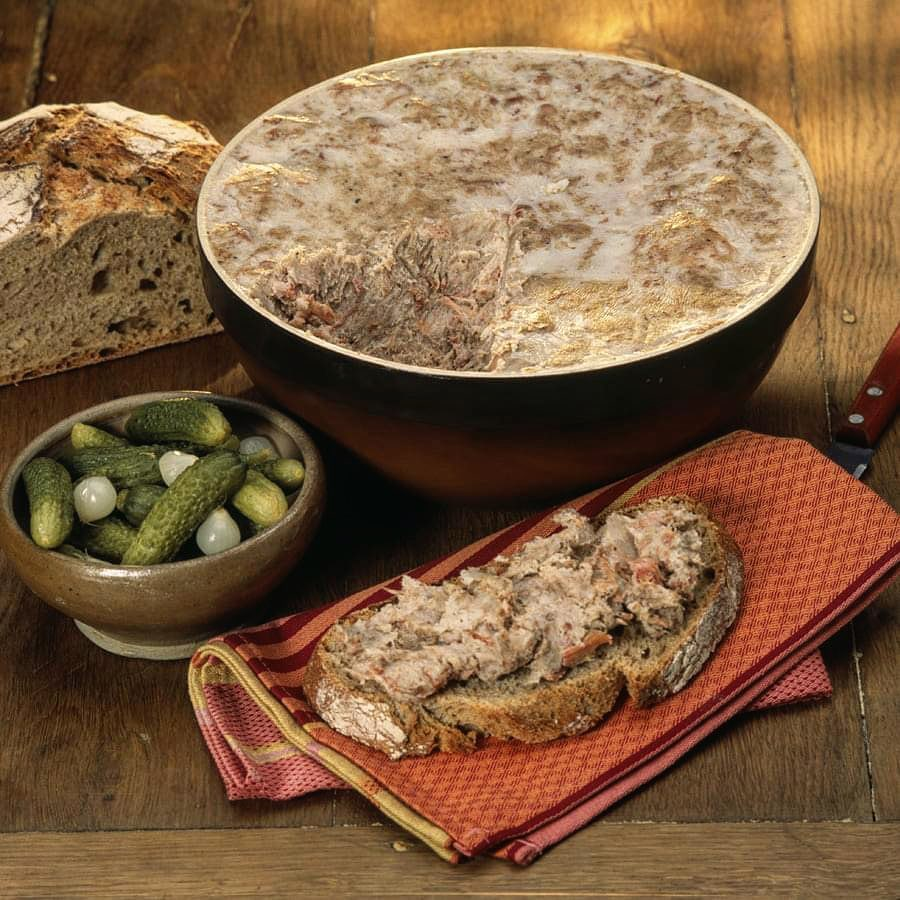

Mäsová pomazánka — Normy Jedál
RILLETTES [rijet] – MASOVÉ POMAZÁNKY
Milovníci masa už se s těmito pomazánkami pravděpodobně setkali. Jedná se o oblíbenou francouzskou specialitu, která se připravuje obvykle z vepřového bůčku. Použít je ale možné i jiné maso nebo kombinaci více druhů. Maso se nakrájí na malé kostky, osolí, opepří, podlije vodou a bílým vínem. Přidat se mohou podle chuti také další aromatické ingredience jako třeba tymián, česnek nebo rozmarýn. Maso se peče velmi pomalu v troubě, dokud se nerozpadá. Trvat to může až osm hodin. Pro jemněší texturu lze pak ještě natrhat vidličkou. Hotovou pomazánku je ideální přendat do skleněné či keramické nádoby, kde ji už stačí jen nechat vychladnout. V chladu se rillettes uchovávají po celou dobu.
A pro ty, kteří nemají chuť a čas na vlastní výrobu, jsme tu my. V DELMART máme nově velké množství francouzských rillettes, které můžeme skutečně vřele doporučit 😋
V kombinaci s čerstvým pečivem, zejména kvasovým chlebem z naší pekárny, a nakládanou či čerstvou zeleninou jsou vhodné jako lahodná rychlá svačina, oběd nebo večeře.
Poctivou porci masa si můžete vychutnat v kachní, vepřové nebo kuřecí verzi od značky RANOU. Variantu z ryb pak nabízíme od značky ODYSSÉE – krabí, tuňákovou či z makrely nebo sardinek.
.
.
.
#DELMART #supermarket #najdetevdelmart #rillettes #masovapomazanka #french #francouzske